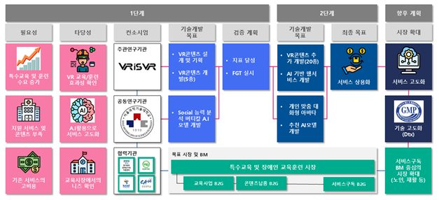

01Problem문제
Standard assessments of social ability rely on observation and questionnaires. This project uses immersive content to capture how a person actually interacts with a virtual agent, and analyzes those interaction patterns with AI.
사회적 능력 평가는 보통 관찰과 설문에 의존합니다. 이 과제는 몰입형 콘텐츠로 가상 에이전트와 실제로 어떻게 상호작용하는지 기록하고, 그 패턴을 AI로 분석합니다.
02Approach접근 방법
- Interaction task design상호작용 과제 설계Designed virtual-agent scenarios that elicit social interaction.사회적 상호작용을 끌어내는 가상 에이전트 시나리오를 설계했습니다.
- Interaction-style analysis상호작용 방식 분석Analyzed how participants respond to different agent guidance styles.에이전트의 안내 방식에 따라 참여자가 어떻게 반응하는지 분석했습니다.

03Results결과
- Mentored the student team to publications at ACM CHI 2025 and HCI Korea 2025.후배 연구팀을 지도해 ACM CHI 2025와 HCI Korea 2025에 발표했습니다.
04My role나의 역할
- Designed and evaluated the virtual-agent-based assessment task.가상 에이전트 기반 평가 과제를 설계하고 평가했습니다.
- Supervised the student researchers.후배 연구자들을 지도했습니다.
05Tools & methods사용 기술
UnityVirtual agentsInteraction analysisUser study